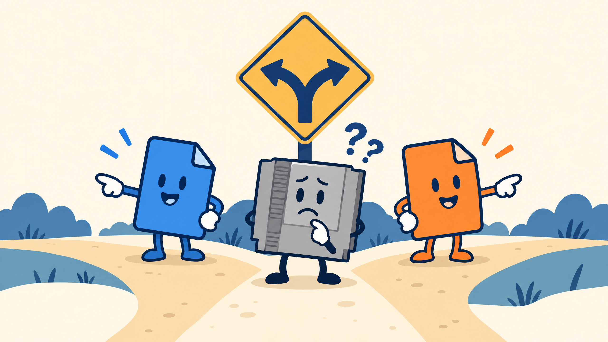

01
Back it up
Keep the clean original untouched. Work on a copy so “oops” stays a funny story.
Safety checklist →FEATURE EDITION · NOT A PAID TIER
A personal, experimental Meta-GBA workspace for legally owned dumps, tiny reversible changes, and emulator-first testing.
Patch-only · non-commercial · full control for security and safety
“One game at a time.”
MUSE is watching the scope.
THE THREE COMMANDMENTS
Keep the clean original untouched. Work on a copy so “oops” stays a funny story.
Safety checklist →IPS for GB/GBC. UPS for GBA. A file extension is not a magical costume.
Formats explained →Let the emulator find the weirdness before your hardware has to.
Troubleshooting →
GIT-FED'S WAY OR THE HIGHWAY
Edit over adding, refuse bulk edits, and keep every step reviewable.
Meet MUSEOPTIONAL SUPPORT
Payment is never a substitute for safe, reviewable work.
Support Git-FED